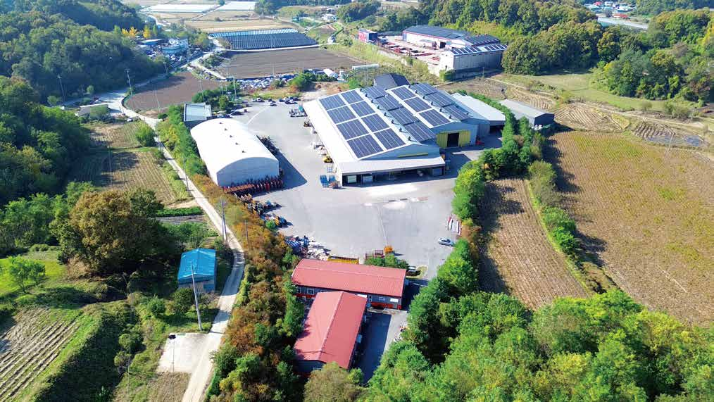

(주)제일안전유리
강화 · 배강도 · 접합
- 설립
- 2010년 9월 2일
- 대표이사
- 이은수
- 임직원
- 59명
- 소재지
- 충북 음성군 생극면 병암리 226
강화 · 배강도 · 접합 · 복층 · 힛속
충북 음성의 두 공장에서 KS 인증 안전유리를
재단부터 열처리, 접합, 복층 가공까지 직접 생산합니다.
커튼월 외벽에 쓰이는 강화·복층유리
회사소개
(주)제일안전·복층유리는 오랜 경험과 숙련된 인력, 최상의 장비를 바탕으로 정성을 다한 품질을 약속합니다. 신뢰와 성실로 인정받는 기업으로 꾸준히 발전해 가겠습니다.
강화 · 배강도 · 접합
복층 · 강화 · 배강도 · 접합 · 힛속

제품
유리 종류를 선택하면 단면 구조와 특징, 주요 사용처를 볼 수 있습니다.
단면 구조 개념도 (실제 두께 비율과 다를 수 있습니다)
KS L 2002

아파트·빌라·단독주택 창호

오피스 파티션·회의실

커튼월·고층 외벽

출입문·쇼윈도·연결통로
생산설비
3,000×6,500
국내 최대 규모 수평 강화로의 최대 가공 치수(mm). 복층용 강화로는 2,700 × 6,000mm까지 가공합니다. 싱글·더블·트리플 로이유리 강화에도 대응합니다.

건축용 유리, 인테리어 유리, 접합 유리, 수평 유리, 각종 도어 유리, 샤워부스, 계단 유리, 일반 유리
품질인증
두 공장 모두 KS 제품인증을 받아 정기 심사를 거치고 있습니다.
연혁
제일안전유리
법인 설립, 수평 강화로 설치 및 강화·배강도유리 생산 개시
제일안전유리
KS 제품인증 취득 (KS L 2002 강화유리, KS L 2015 배강도유리)
제일안전유리
유리 자동 재단기 증설
제일안전유리
강화·배강도유리 가공설비 증설 (수평 자동 세척기 3대, 양면 면취기 3대 등)
제일안전유리
한국유리공업 세큐라이트 회원사 가입
제일안전유리
접합유리 제조설비 도입 및 설치 완료
제일복층유리
법인 설립
제일복층유리
복층·가스주입 단열유리 설비(IGIS), 강화유리 제조설비 설치
제일복층유리
KS 인증 취득 (강화유리, 배강도유리)
제일복층유리
KS 인증 취득 (복층유리)
제일복층유리
가스주입 단열유리 단체표준 인증 취득
제일복층유리
금왕읍 신평리 이전, 강화 라인과 복층 라인 추가 도입
제일복층유리
힛속 심사 테스트 통과, 단체표준 인증서 획득
견적 문의
충북 음성군 생극면 병암리 226
T 043-883-3362 F 043-883-3364
충북 음성군 금왕읍 신평리 33
T 043-882-7794 F 043-882-7796
경기도 하남시 광암동 401-6
T 031-792-0062 F 031-792-0162